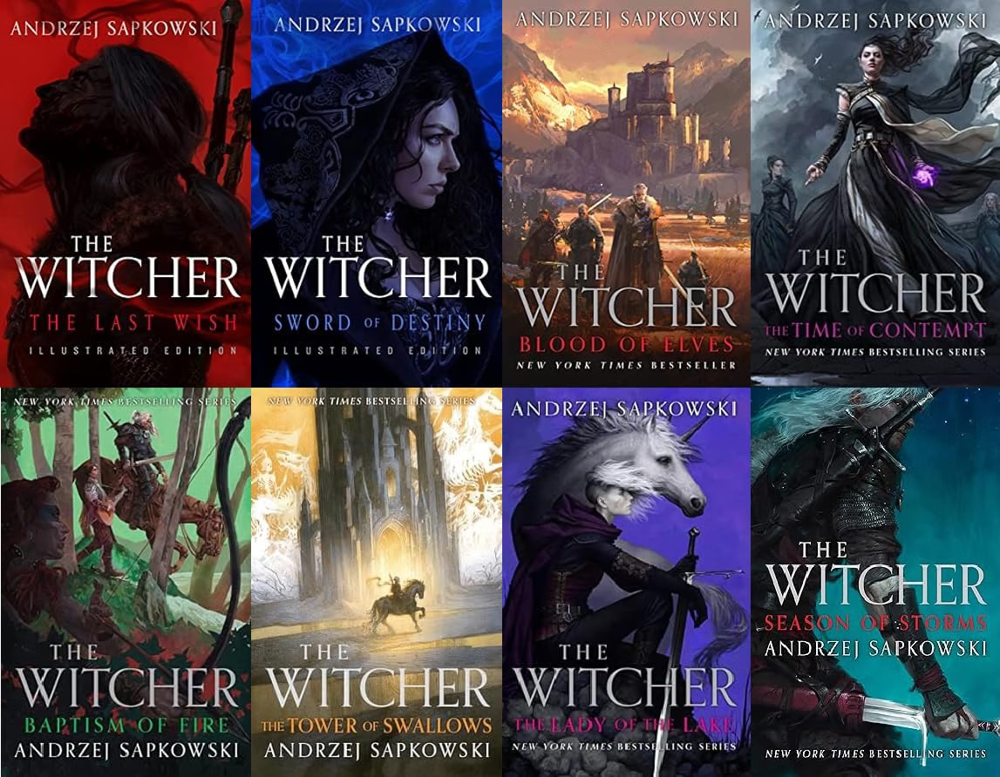

The Literary & Graphic Canon
From Sapkowski's foundational prose to Dark Horse's illustrated graphic narratives, exploring the written lore of The Continent.
The Original Saga
The Witcher began as short stories submitted to the Polish magazine Fantastyka in the late 1980s. Sapkowski constructed a world devoid of simple binaries like pure good and evil, grounding high fantasy in harsh socioeconomic realities, political realism, and dry wit.

Recommended Reading Order (Narrative Flow)
For newcomers and returning readers alike, this reading order is widely recommended. It establishes emotional connections and critical lore foundations through the short story anthologies before embarking on the core five-book saga, leaving standalone prequels and midquels as enriching expansions:
- The Last Wish (Essential foundation: introduces Geralt, Dandelion, and Yennefer)
- Sword of Destiny (Crucial prelude: establishes Geralt and Ciri’s bond of destiny)
- Blood of Elves (Main Saga Book 1: Ciri's training at Kaer Morhen and the hunt begins)
- Time of Contempt (Main Saga Book 2: The Thanedd coup fractures the Northern kingdoms)
- Baptism of Fire (Main Saga Book 3: Geralt forms his iconic company on the march)
- The Tower of the Swallow (Main Saga Book 4: Ciri fights for survival across the wilderness)
- The Lady of the Lake (Main Saga Book 5: The epic conclusion to Geralt, Yennefer, and Ciri's arc)
- Season of Storms (Standalone midquel: set between stories in The Last Wish, best read after the saga)
- Crossroads of Ravens (Prequel novel: focuses on young Geralt during his earliest years on the Path)
The Ninth Book: Crossroads of Ravens
The ninth overall book in Andrzej Sapkowski's Witcher series is Crossroads of Ravens, which was published in English on September 30, 2025. Taking place earlier than the rest of the saga, this standalone prequel explores Geralt of Rivia as a young, freshly mutated witcher venturing onto the Path for the first time, grappling with the harsh realities of mercenary monster hunting before the legends took shape.
In-Universe Chronological Order
For re-readers who prefer experiencing Geralt's journey strictly according to in-universe timeline events:
- Crossroads of Ravens (Early youth and first contracts on the Path)
- The Last Wish (Geralt meets Yennefer and the origin of the Child of Surprise)
- Season of Storms (Takes place between short stories within The Last Wish)
- Sword of Destiny (Geralt crosses paths with Ciri in Brokilon Forest)
- The Main Saga (Blood of Elves through The Lady of the Lake)
Dark Horse Comics Series (2014–Present)
Expanding Geralt's exploits into the visual sequential medium, American publisher Dark Horse Comics has published an ongoing series of The Witcher graphic novels in close collaboration with CD Projekt since 2014. It stands as the second major comic adaptation in franchise history, following the original Polish comic run published between 1993 and 1995.
Rather than direct adaptations of Sapkowski's novels, the stories are predominantly standalone original mysteries penned by established comic writers. While written independently of Sapkowski, a notable exception is Volume 2, Fox Children, which adapts the vulpess storyline directly from the novel Season of Storms.
Despite being published in the United States, the series has maintained deep European roots by featuring a prominent roster of Polish artists and writers. Most notably, Volume 4 (Of Flesh and Flame) was crafted entirely by Polish talent—written by CD Projekt Red narrative designer Aleksandra Motyka and illustrated by Marianna Strychowska—taking Geralt and Dandelion into the exotic lands of Ofir.
Core Comic Arcs & Authors
- House of Glass (Vol. 1): Written by Paul Tobin. Geralt journeys through the Black Forest into the shifting labyrinth of the House of Glass.
- Fox Children (Vol. 2): Written by Paul Tobin. Adapts the vulpess revenge tale from Season of Storms aboard an ill-fated riverboat.
- Curse of Crows (Vol. 3): Written by Paul Tobin (with CD Projekt Red writers Karolina Stachyra, Travis Currit, and Borys Pugacz-Muraszkiewicz). Features Geralt and Ciri on a contract involving a deadly striga.
- Of Flesh and Flame (Vol. 4): Written by Aleksandra Motyka. Geralt and Dandelion are transported overseas to the Sultanate of Ofir.
- Fading Memories (Vol. 5): Written by Bartosz Sztybor. Geralt struggles with scarce monster contracts and investigates foglets targeting children in the town of Badre发布的.
- Witch's Lament (Vol. 6): Written by Bartosz Sztybor. A witch burned at the stake leaves Geralt haunted by cryptic visions and guilt.
- The Ballad of Two Wolves (Vol. 7): Written by Bartosz Sztybor. A mystery subverting classic fable motifs alongside Dandelion.
- Wild Animals (Vol. 8): Written by Bartosz Sztybor. Geralt washes ashore on an isolated island caught in a conflict between human settlers and indigenous beasts.
- Corvo Bianco (Vol. 9): Written by Bartosz Sztybor. Geralt attempts to enjoy his quiet retirement in Toussaint before old debts disrupt his peace.
Dark Horse Omnibus Collections
Dark Horse collects these story arcs into massive, comprehensive omnibus volumes that include bonus sketches, creator annotations, and exclusive short stories:
- The Witcher Omnibus Volume 1: Collects House of Glass (#1–5), Fox Children (#1–5), Curse of Crows (#1–5), and the Killing Monsters one-shot (440 pages).
- The Witcher Omnibus Volume 2: Collects Of Flesh and Flame (#1–4), Fading Memories (#1–4), Witch's Lament (#1–4), and the FCBD story Once Upon a Time in the Woods (336 pages).
Acquire the Complete Novel Library
The standard boxed set collects the core 5-novel saga (Blood of Elves, The Time of Contempt, Baptism of Fire, The Tower of the Swallow, and The Lady of the Lake). Complete your 9-book collection with the foundational anthologies, standalone midquel, and prequel novel below: